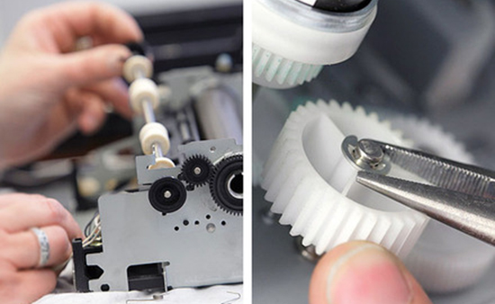

BIENVENIDOS A SERVIPRO
Somos una empresa mexicana seria y consolidada,
formada por profesionales en los servicios de Soporte Técnico, Equipo de Cómputo y Audiovisual.
Servicios que Ofrecemos:
Sistemas de Seguridad
Instalacion de Redes
Reparacion de Laptops
Otros servicios de SERVIPRO.
Instalcion de redes.
Imagine su negocio, empresa o corporativo conectado a una red que le permita una comunicación efectiva
Soporte Tecnico a Laptos.
Contamos con un soporte técnico para laptops profesional, eficiente y a la medida de sus necesidades reales.

Reparacion de Impresoras.
Realizamos la reparación de impresoras a domicilio o en nuestras instalaciones y en tiempo récord.
Reparacion de Multifuncionales.
Contamos con un área exclusiva para el servicio de mantenimiento y reparación de multifuncionales